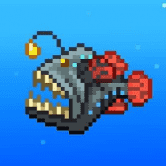
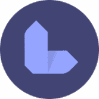
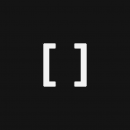
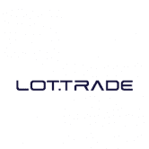
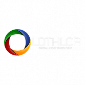
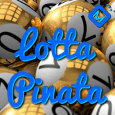
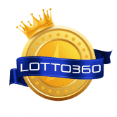
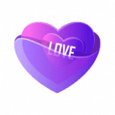
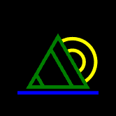
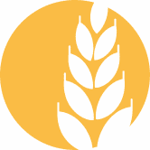

LlamaSwap LlamasSwap 是 BSC 场景中最新的收益农场和 Staking 平台，由 llamas 为酷炫的 llamas 打造！ 最近在 BSC 领域的太多地毯拉动已经侵蚀了社区对诚实团队和信誉良好的项目的信心。 加密对于所
Llamaverse Genesis 吐痰哥们 随着我们 Spit Buddies 的推出，我们将寻求跨社区合作。这将使我们能够与我们的合作社区一起拓宽我们的视野，并使我们的两个持有者能够轻松地融入我们的
LOAD Network LOAD 是一个基于以太坊的 De-Fi 项目，由致力于博弈论创新和 NFT 开发的全球专业加密爱好者团队于 2020 年 9 月推出。 该路线图列出了三个不同的阶段。第一阶段允许投资
LOAGAME 预售时间为 1 月 14 日下午 4 点 UTC 发布时间为 1 月 15 日下午 4 点 UTC 私人销售现已在 NFTLOA.COM 上进行 PLAY.NFTLOA.COM 代币合约地址 0xb16074cb791eba8c4100cce78656a4b34358399e 阿拉贡传奇是第一款 NFT Play to Earn web 3.0 冒险和战略游戏，
Lokum Finance LokumFinance 是一个自动化做市商 (AMM) — 一种去中心化金融 (DeFi) 应用程序，允许用户交换代币，通过农业提供流动性并赚取费用作为回报。 它于 2021 年 4 月推出，是一个去中心化
LOL Surprise Finance LOL Surprise Finance是BSC（Binance Smart Chain）上的下一代多层收益农场，以社区为导向，对未来有很大的规划。 您和您的孩子都熟悉这些玩具
Lollipop swap BSC农业棒棒糖财务 什么是棒棒糖 (LOL)？ 🍭 Lollipop 是第一个基于以太坊的流动性证明和权益证明的代币。这意味着供应被发送到 Uniswap 并提供了初始流动性。质
Lollipop.farm Lollipop 是币安智能链上的 100% 去中心化多链农场和跨链桥接协议。 Lollipop Bridge 建设完成后，Lollipop 协议将注入 100 万美元流动性作为初始流动性，其中 500,000 美元流动性
Lonely Alien Space Club Lonely Alien Space Club 是存储在以太坊区块链上的 10,000 个独特的 ERC-721 代币的集合。每个 NFT 都是非连续铸造且可证明是独一无二的，都拥有完整的会员资格，包括功能实用的实用程
Lonely Frog Lambo Club Lonely Frog Lambo Club 是以太坊区块链上 10,000 个独特的随机生成和策划的青蛙 NFTS 的集合。每只孤独的青蛙都是独一无二的，由超过 150 种独特的特征生成，包括表情、服装、头饰
Longdrink Finance longdrink.finance 在币安智能链上创建指数代币。因此，投资者可以轻松访问一套 Binance Smart Chain 代币。 LONG 是协议的治理代币，使持有者能够决定未来指数的组成及其权重，以及协议内
LooksRare 作为社区第一的一部分意味着 LooksRare 奖励、授权并回馈平台的用户和创作者。 💎 获得奖励 - 从符合条件的收藏中购买或出售 NFT 的用户可以获得 LOOKS 代币。 🤝 分享平台费
Loopring Exchange Loopring 是一种使用 zkRollup 在以太坊上构建高性能、非托管、订单簿交换的协议。 介绍 Loopring DAO 投票！💙 社区将选择他们想用路印协议费用激励哪些流动性提供者 通过在 L2 上与
Loopy Donuts 10,000 个 Loopy Donuts 设法摆脱了无聊、陈旧的公司甜甜圈店的货架，在以太坊区块链周围嬉戏。虽然看起来我们的 Loopy Donuts 都是关于乐趣的，但它们实际上是您去 LoopyLand 的 VIP 票。L
Loot Craft LootCraft 是 bsc 上第一个受 Loot 和 LootRarity 启发的项目。任何人都可以创建像 LootRarity 这样的召唤师，没有限制，不需要任何费用（除了 gas）。每天一次，召唤师可以冒险，赚取 250
Loot explorer 🎮 我们在做游戏吗？ 🗺️ 有多少探险家可供铸造？ 🔳 我需要 Loot 来铸造 Explorer 吗？ 💰 薄荷的价格是多少？ 战利品：探索者是 8000 个独特的探索者角色，拥有自己独特的职
Loot for Losers Loot for Losers - 自动生成；完全上链；限量8000个，超过7000个可免费领取 加入我们的社区，持有 LOSR 并拥有 LOM（本月失败者）的投票权。每个 LOM 获胜者都
Loot TH 拥有20多年经验的MMORPG游戏开发商旗下的开发项目。 Loot TH 是 Loot 的一个分叉项目，旨在探索带有 NFT 的 MMORPG 的可能性。 [战利品是随机生成并存储在链上的
 LootFish LootFish 是 Avalanche C 链上的一个独特的 NFT 集合，包含 10000 条美丽而异国情调的鱼。该系列中有数百种外来鱼类，从彩虹鱼到垂钓者到倒钩。 LootFish 涵盖了海洋生物的整个范围，没
Lootswap LootSwap 是 Harmony 网络上的幻想游戏主题 DEX 一些骗子创建了一个假的 ONEFI 令牌。这是一个骗局。在任何情况下都不要购买。 OneFi 的官方代币尚未推出。一旦完成，我们将分享真
 LoremBoard 是一个多链投资组合和投资预言机，它将为您提供有用的见解，包括 NFT 画廊 LoremBoard 是一个多链投资组合和投资预言机，它将为您提供有用的见解，包括 NFT Galle
 LOSTPOETS Lost Poets 是一款 NFT 收藏品和策略游戏。 NFT 集合包括 65536 个可获取的 NFT 和 1024 个 Origin NFT。该项目的发布分为几个阶段。有关详细信息，请参阅秘密路线图。 很久以前，在
 LOT.TRADE LOT.TRADE (LOT) 平台通过定期的锦标赛、战斗和挑战来代表加密交易的游戏化和普及化，目标是成为世界上最好的交易者。自定义锦标赛并赢得大奖。赌徒的赌注。 NFTs 作为
 Lothlor Token Fund Lothlor 代币基金，符号 LOT，使个人能够接触到数字资产的价格变动。 Bitcoin UP Review 很少有人能抗拒赚取数千美元被动收入的愿望。许多在线报告已经证实了比特币交易
 Lotta Pinata 最低存款 100TRX 即可获得参加彩票游戏的门票。您获得的门票越多，中奖机会就越高。获得无限门票。保证获胜者或时间重置。老板和豪赌者存入 1000-9999 以猜测 Pinata 坐标并
Lottery on Chains Lottery on Chains 是一款基于区块链的彩票游戏。每个人都可以参加并有机会赢得奖品。只需一键进入游戏。我们的智能合约是开放且经过验证的。目前我们仅支持币安智
 Lotto360 Lotto360 是一个由 3 个 Play2Earn 游戏组成的赌博 dapp。 1- 骰子：买票并丢骰子，如果您猜对了数字，您将获得 x8 的赌注。 2- 野兽号：如果号码为 666，则购买彩票并在
Lotus Swap 什么是莲花交换？ Lotus Swap - 币安智能链 (BSC) 上的下一代 DeFi 交易所 币安智能链上的 DEFI 应用。 莲花交换统计 该数据代表被跟踪智能合约的原始链上活动
Lotus Swap Polygon 莲花交换多边形 打开 Dapp 莲花交换多边形 Lotus Swap - 在 Polygon (MATIC) 网络上运行的 DeFi Yield Farm 应用程序 莲花交换多边形统计 该数据代表被跟踪智能合约的原始链上活动
 LovePot LovePot 是一种无损“累积奖金”池，类似于 Pool Together 开创的服务。用户在初始质押期间（例如前 24 小时）将代币质押到 LovePot。在这个初始阶段结束时，Pot
LOVERS ISLAND TOKEN Polygon 动力代币，旨在促进加密货币的和平与平等。 开发商的长期计划是用加密货币购买一个岛屿。 并且，将代币适配为法定货币。 Polygon 动力代币，旨在促进加密货币
LoveSSwap LovesSwap — 是一个独特的 Love DeFi 项目，它是一个特殊的额外层，与 AmorSwap 并行工作。两者都在煎饼上推出。最重要的特点是：EROS 和 AMOR 的回购、永久有效的 AMOR 和 EROS 超级池
 LOVET Polygon 上 1024 个生成艺术的 NFT 集合。该项目于 2021 年 12 月开始，旨在为加密空间带来独特的 NFT 生态系统。 用 Python 编写的自定义代码已用于生成整个集合。这个想法是为了实
 LuaSwap AMM 池已成为 DEFI 中一个非常重要的加密原语，它不仅可以列出和交易代币，还可以提供其他项目可以构建的价格信息。 LuaSwap 是受先前基于 AMM 的交换协议（如 Uniswap 和 Su


")